10 tidyr
tidyr es un paquete que pertenece al tidyverse, a quienes también pertenecen ggplot2 y dplyr. Este paquete es muy útil para manipular datos, y más específicamente, crear datos “tidy”, es decir, datos bien ordenados.
Los datos bien ordenados, de acuerdo a tidyr.tidyverse.org, tiene tres características:
- Cada una de las columnas de nuestros datos son una variable
- Cada fila es una observación
- Cada celda es un valor particular.
Las ventajas de emplear este paquete es que permite manipular los datos de una forma más comprensiva y eficiente.
10.1 Instalación de tidyr
Como se mencionaba anteriormente para ggplot2 y dyplr, puede instalarse tidyverse de la siguiente manera:
install.packages("tidyverse")También puede instalarse solamente tidyr:
install.packages("tidyr")10.2 Principales 5 funciones de tidyr
Existen 5 funciones de tidyr que hacen parte de las explicadas en tidyr.tidyverse.org: Pivotting, Rectangling, Nesting, Splitting and Combining y Missings
Pivotting
Las funciones pivot_longer() o pivot_wider() que pertencen a esta categoría, permiten convertir entre formas largas (long) y anchas (wide) las bases de datos. Veamos un ejemplo.
Para este fin utilizaremos la base de datos relig_income que viene en el paquete tidyr:
## [1] "religion" "<$10k" "$10-20k"
## [4] "$20-30k" "$30-40k" "$40-50k"
## [7] "$50-75k" "$75-100k" "$100-150k"
## [10] ">150k" "Don't know/refused"## # A tibble: 5 x 11
## religion `<$10k` `$10-20k` `$20-30k` `$30-40k` `$40-50k` `$50-75k` `$75-100k`
## <chr> <dbl> <dbl> <dbl> <dbl> <dbl> <dbl> <dbl>
## 1 Agnostic 27 34 60 81 76 137 122
## 2 Atheist 12 27 37 52 35 70 73
## 3 Buddhist 27 21 30 34 33 58 62
## 4 Catholic 418 617 732 670 638 1116 949
## 5 Don’t k~ 15 14 15 11 10 35 21
## # ... with 3 more variables: `$100-150k` <dbl>, `>150k` <dbl>, `Don't
## # know/refused` <dbl>Esta base de datos cuenta con las variables religion y rangos de ingreso, y los valores corresponden al número de personas que respondieron en cada rango.
Ahora se va a transformar a una base de datos larga (long), es decir, se incrementará el número de filas y disminuirá el número de clumnas. Para ello, utilizamos la función pivot_longer() para reorganizar los datos de la siguiente manera:
data <- relig_income %>%
pivot_longer(!religion, names_to = "income", values_to = "count")
head(data, 10)## # A tibble: 10 x 3
## religion income count
## <chr> <chr> <dbl>
## 1 Agnostic <$10k 27
## 2 Agnostic $10-20k 34
## 3 Agnostic $20-30k 60
## 4 Agnostic $30-40k 81
## 5 Agnostic $40-50k 76
## 6 Agnostic $50-75k 137
## 7 Agnostic $75-100k 122
## 8 Agnostic $100-150k 109
## 9 Agnostic >150k 84
## 10 Agnostic Don't know/refused 96Se observa que la nueva base de datos contiene sólo 3 columnas: religion, income y count y al pasar de ancha a larga el número de observaciones se ha incrementado y este incremento se debe a que en la nueva base de datos cada religión se repite el rango de ingresos que había en las columnas.
Intentemos entender los argumentos de la función pivot_longer(). Utilizamos, como en ejemplos pasados, el muy útil operador %>% para indicarle a R que la base de datos a manipular es relig_income. Por otro lado, el primer argumento de la función pivot_longer() indica que se van a manipular todas las columnas exceptuando religion (recordemos los operadores lógicos, especialmente !). El segundo argumento, le da nombre a la variable que se creó a partir de los datos guardados en columnas; y el tercero argumento, le da nombre a la variable que se creó a partir de los datos guardados en las celdas.
Para pasar la base de datos larga a ancha, se utliza la función pivot_wider de la siguiente forma:
## # A tibble: 10 x 11
## religion `<$10k` `$10-20k` `$20-30k` `$30-40k` `$40-50k` `$50-75k` `$75-100k`
## <chr> <dbl> <dbl> <dbl> <dbl> <dbl> <dbl> <dbl>
## 1 Agnostic 27 34 60 81 76 137 122
## 2 Atheist 12 27 37 52 35 70 73
## 3 Buddhist 27 21 30 34 33 58 62
## 4 Catholic 418 617 732 670 638 1116 949
## 5 Don’t k~ 15 14 15 11 10 35 21
## 6 Evangel~ 575 869 1064 982 881 1486 949
## 7 Hindu 1 9 7 9 11 34 47
## 8 Histori~ 228 244 236 238 197 223 131
## 9 Jehovah~ 20 27 24 24 21 30 15
## 10 Jewish 19 19 25 25 30 95 69
## # ... with 3 more variables: `$100-150k` <dbl>, `>150k` <dbl>, `Don't
## # know/refused` <dbl>Rectangling
Rectangling tiene una serie de funciones que permite tomar bases de datos que son listas de elementos numéricas y no y crear una base de datos con filas y columnas.
Como ejemplo, utilizaremos la base de datos gh_users del paquete repurrrsive que contiene información sobre usuarios de GitHub y ha sido recuperda de la API de GitHub.4 Esta base de datos es una lista con 6 componentes y cada uno contiene información de 6 usuarios, tales como: username, GitHub id, y fecha de afiliación.
las funciones de este tipo, como unnest_longer() o unnest_wider(), convierten listas anidadas en “Tidy tibbles” más simples. Por ahora, podemos interpretar un “Tibble” como una especie de data frame. Veamos un ejemplo.
Para ver la información del primer usuario, el código sería:
install.packages("repurrrsive")## [[1]]
## [[1]]$login
## [1] "gaborcsardi"
##
## [[1]]$id
## [1] 660288
##
## [[1]]$avatar_url
## [1] "https://avatars.githubusercontent.com/u/660288?v=3"
##
## [[1]]$gravatar_id
## [1] ""
##
## [[1]]$url
## [1] "https://api.github.com/users/gaborcsardi"
##
## [[1]]$html_url
## [1] "https://github.com/gaborcsardi"
##
## [[1]]$followers_url
## [1] "https://api.github.com/users/gaborcsardi/followers"
##
## [[1]]$following_url
## [1] "https://api.github.com/users/gaborcsardi/following{/other_user}"
##
## [[1]]$gists_url
## [1] "https://api.github.com/users/gaborcsardi/gists{/gist_id}"
##
## [[1]]$starred_url
## [1] "https://api.github.com/users/gaborcsardi/starred{/owner}{/repo}"
##
## [[1]]$subscriptions_url
## [1] "https://api.github.com/users/gaborcsardi/subscriptions"
##
## [[1]]$organizations_url
## [1] "https://api.github.com/users/gaborcsardi/orgs"
##
## [[1]]$repos_url
## [1] "https://api.github.com/users/gaborcsardi/repos"
##
## [[1]]$events_url
## [1] "https://api.github.com/users/gaborcsardi/events{/privacy}"
##
## [[1]]$received_events_url
## [1] "https://api.github.com/users/gaborcsardi/received_events"
##
## [[1]]$type
## [1] "User"
##
## [[1]]$site_admin
## [1] FALSE
##
## [[1]]$name
## [1] "Gábor Csárdi"
##
## [[1]]$company
## [1] "Mango Solutions, @MangoTheCat "
##
## [[1]]$blog
## [1] "http://gaborcsardi.org"
##
## [[1]]$location
## [1] "Chippenham, UK"
##
## [[1]]$email
## [1] "csardi.gabor@gmail.com"
##
## [[1]]$hireable
## NULL
##
## [[1]]$bio
## NULL
##
## [[1]]$public_repos
## [1] 52
##
## [[1]]$public_gists
## [1] 6
##
## [[1]]$followers
## [1] 303
##
## [[1]]$following
## [1] 22
##
## [[1]]$created_at
## [1] "2011-03-09T17:29:25Z"
##
## [[1]]$updated_at
## [1] "2016-10-11T11:05:06Z"Se observa que la lista tiene varios objetos, ahora lo que queremos es organizar las 6 listas en formato de base de datos estándar, esto es, que cada información del usuario sea una variable (columna) y tener esto para los 6 usuarios (filas). Lo primero que hacemos es utilizar la función tibble(), que nos permite poner cada una de las 6 listas en una fila. El código es el siguiente:
View(usuarios)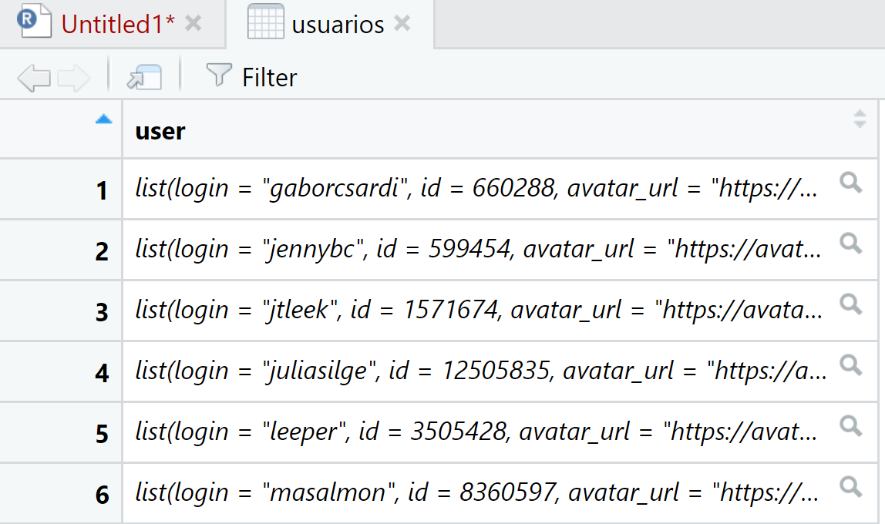
Al observar nuestra base de datos usuarios, nos damos cuenta que ya tiene un formato de data frame pero la información se encuentra anidada, es decir, en cada fila se encuentra toda la información para cada usuario. Miremos la información para la primera fila (usuario):
## [1] "login" "id" "avatar_url"
## [4] "gravatar_id" "url" "html_url"
## [7] "followers_url" "following_url" "gists_url"
## [10] "starred_url" "subscriptions_url" "organizations_url"
## [13] "repos_url" "events_url" "received_events_url"
## [16] "type" "site_admin" "name"
## [19] "company" "blog" "location"
## [22] "email" "hireable" "bio"
## [25] "public_repos" "public_gists" "followers"
## [28] "following" "created_at" "updated_at"Podemos ver ahora cada uno de los componentes, lo que nos gustaría transformar a variables (columnas). Para ello podemos utilizar la función unnest_wider() de la siguiente forma:
View(data)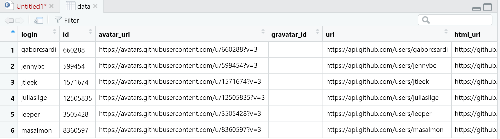
La función anterior, en efecto, nos permitió convertir cada componente en una columna, sin embargo, puede que no necesitemos todos esos componentes. Para ello, utilizamos la función hoist() que permite seleccionar y renombrar las columnas con las que nos queremos quedar en la base de datos final. El código es el siguiente:
View(data)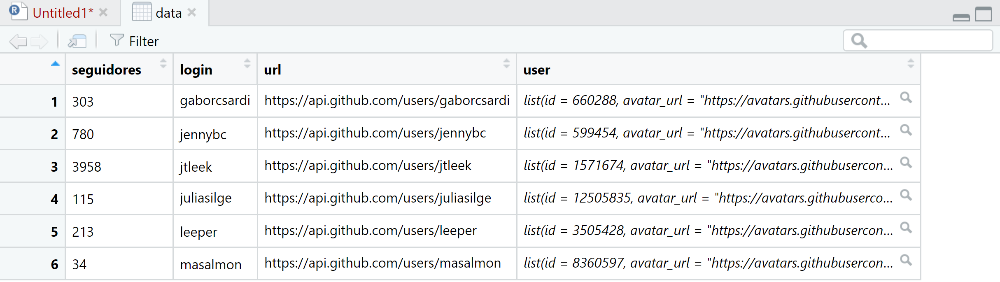
Como se puede observar, ya tenemos una base de datos con un formato estádar.
Nesting
Las funciones Nesting son opuestas a las Rectangling y permiten convertir un grupo de componentes en una sola fila anidada.
Miremos el siguiente ejemplo. Se genera un data frame con la función tibble(), la cual permite crear columnas como listas. El código es el siguiente:
df_anidado <- tibble(
f = c(1, 2, 3),
data = list(
tibble(a = 2, b = 4),
tibble(a = 15:29, b = 1:15),
tibble(a = 1)
)
)View(df_anidado)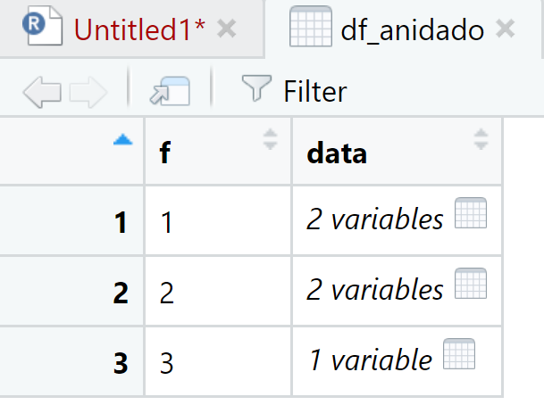
Hemos creado un data frame de tipo tibble anidado. En data, en cada fila es posible visualizar las variables y los valores. El código para visualizar cada elemento es:
View(df_anidado[[2]][[1]])
View(df_anidado[[2]][[2]])
View(df_anidado[[2]][[3]])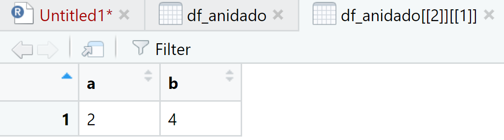
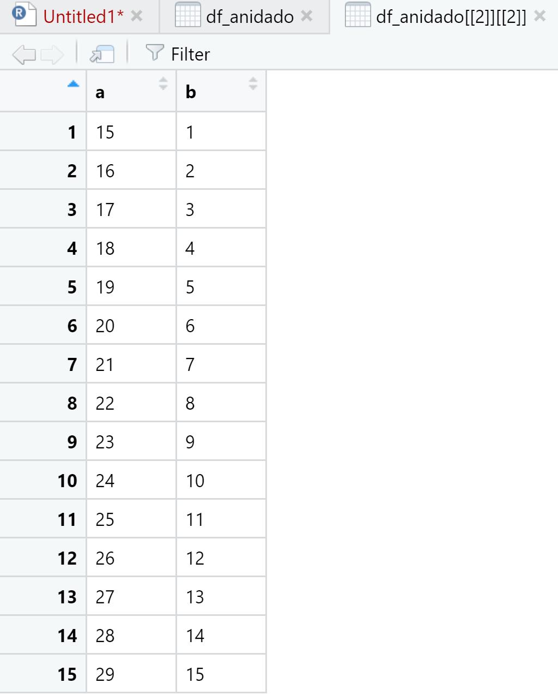
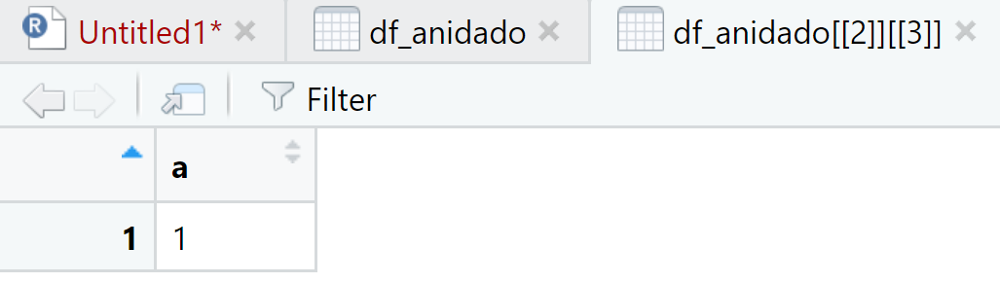
Para desanidar cada conjunto de datos se utiliza la función unnest() de la siguiente forma:
View(data)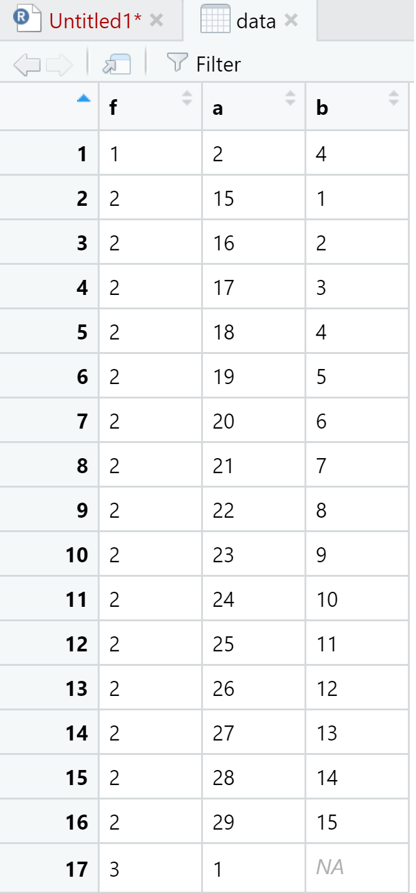
Le hemos indicado a la función unnest() que desanidara todos los componentes anidados del data frame principal. Ahora podemos observar cada uno de esos elementos.
Splitting and Combining
Las funciones de este tipo nos permiten convertir una sola columnaen varias, o lo contrario, convertir varias columnas en una sola. A este tipo pertenecen las funciones separate(), extract() o unite().
Veamos un ejemplo para la función separate.
View(df)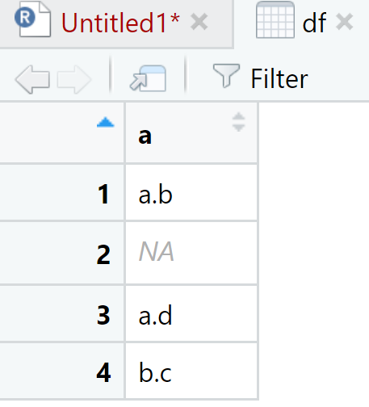
View(data)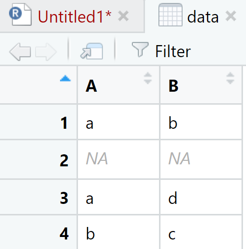
En el primer paso creamos un data frame con la función data.frame() que contaba con una sola columna, y lo separamos en otro data frame con dos columnas. Observemos otro ejemplo simple.
View(df1)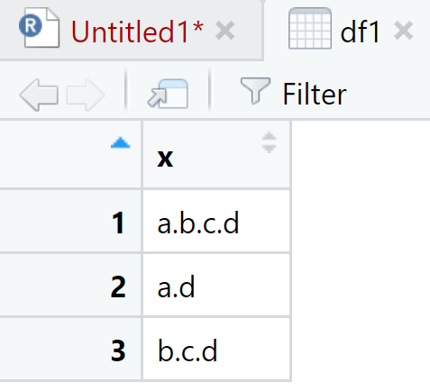
## Warning: Expected 4 pieces. Missing pieces filled with `NA` in 2 rows [2, 3].View(data)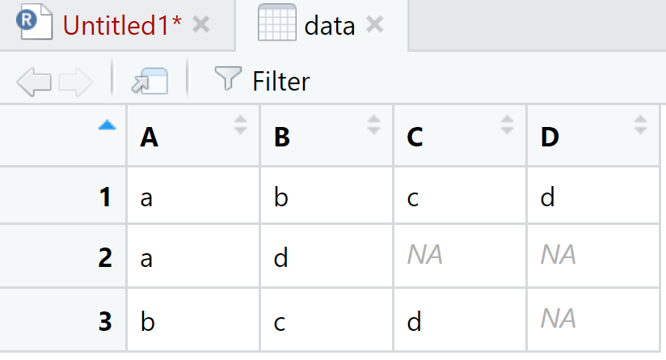
La función separate() toma los elementos de la columna dada en el primer argumento, en este caso ‘x’ y los separa en columnas de acuerdo al vector del segundo argumento. En df1 tenemos tres elementos de caracteres. En la columna “A” van los primeros elementos de la cadena, en la “B” los segundos y así sucesivamente. En el caso de que la cadena de caracteres no tenga los suficientes componentes R llenará el espacio con ‘NA’; y ¿si quisieramos tomar solo el segundo elemento? Se podría hacer lo siguiente:
View(df4)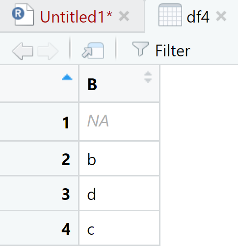
Missings
Estas funciones nos permiten manipular los datos tipo NA. A este tipo pertenecen las funciones drop_na(), complete() y fill().
En el caso de drop_na() tenemos el siguiente ejemplo:
## Warning: Expected 2 pieces. Missing pieces filled with `NA` in 1 rows [1].View(df1)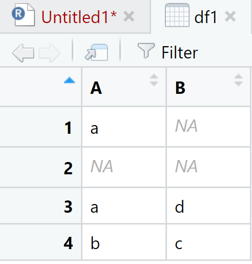
View(df2)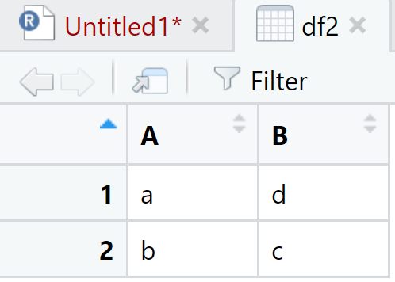
Se observa que ha borrado todas las filas donde habían valores missing
Respecto a complete() tenemos la siguiente base de datos simulada y construida utilizando la función separate(). La primera columna representa un identificador (ID) y la idea es poner los valores :
df <- data.frame(a = c("1-a-b", "2", "3-a-d", "4-b-c"))
df1 <- df %>% separate(a, c("ID", "A", "B"))## Warning: Expected 3 pieces. Missing pieces filled with `NA` in 1 rows [2].View(df1)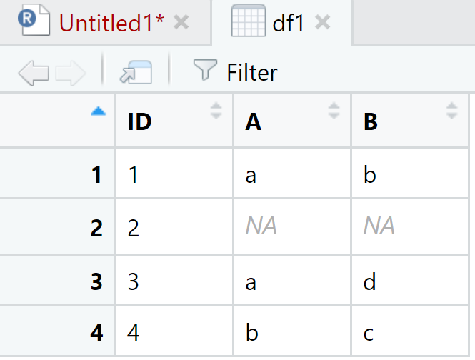
Ahora, a los valores missing en A y B se pondran los valores 3 y 0, respectivamente. El código es el siguiente utilizando la función complete():
View(df2)El anterior código se puede resumir en:
df <- data.frame(a = c("1-a-b", "2", "3-a-d", "4-b-c"))
df1 <- df %>%
separate(a, c("ID", "A", "B")) %>%
complete(., nesting(ID,A,B), fill = list(A=3,B=0))## Warning: Expected 3 pieces. Missing pieces filled with `NA` in 1 rows [2].## # A tibble: 4 x 3
## ID A B
## <chr> <chr> <chr>
## 1 1 a b
## 2 2 3 0
## 3 3 a d
## 4 4 b c10.3 Información adicional
El paquete tidyr cuenta con muchas funciones más allá de las que se presentaron brevemente en este capítulo. Por otro lado, las funciones aquí presentadas pueden seguir instrucciones aún más específicas. Por esto, resulta bastante interesante consultar la documentación al respecto en el siguiente link: https://tidyr.tidyverse.org/